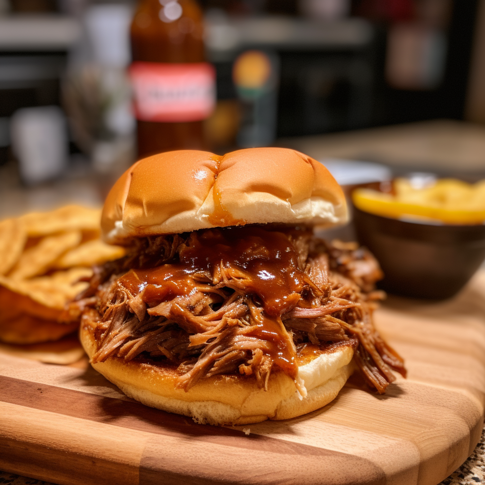

Slow Cooker Pulled Pork

Description
Pulled Pork wiches with fries? Yum!
This recipe practically cooks it's self, all we have to do is throw some stuff in a pot and toss some fries in the oven.
Let's get into it!
Ingredients
- 2 pound bag of frozen fries
- 2 pounds of pork tenderloin
- 12 fluid oz of root beer
- 18 oz barbecue sauce
- 8 hamburger buns, split and lightly toasted
Steps
- Gather the ingredients.
- Place pork tenderloin in a slow cooker; pour root beer over top.
- Cover and cook on low for 6-7 hours, after that time the pork shreds easily.
- Follow instructions on frozen bag of fries, then put the fries in the oven when it will finish
simultaneously with the pork.
- When the pork is finished cooking and has been shredded, stir and mix barbecue sauce in.
- Evenly distribute pork on buns with a side of fries, serve and enjoy!